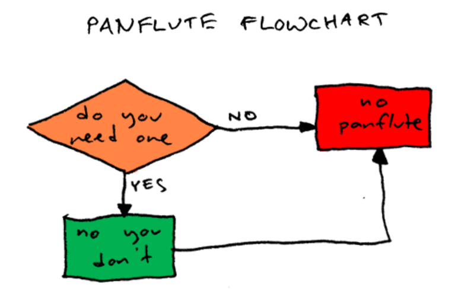

Interaction Design using Flow Charts
What is it?
Documenting how to interact with digital interfaces using Flow Charts and other diagrams.
Flow Chart Examples
Try this one first
{kind=link}
How about this one? I think I'm dating myself with this reference.

A tech support cheat sheet for non-computer people

Flow charts explained by a flow chart
Flow Charts
- Different from site maps because time is added as a dimension
- Actions and processes are the primary items of importance (as opposed to entities or pages and relationships between them - which is the job of site maps).
- Simple visual language: boxes and lines, but also possible to use diamonds, ovals, circles, and other shapes I don’t have names for.
- As with other documents, the hard part is defining the boundaries of the flow chart - what are you not going to include in the document
Actual work examples of flow charts
When do I create a flow chart?
- Not necessary every time, not for every site
- More necessary for transactions: those instances where your users need to go through a few screens/interfaces to get something accomplished.
- Common flows include: sign-up, login, checkout, shopping carts, post an article or comment or forum post, configure or customize a product, surveys and quizzes, and others...
- They are usually made at the same time as wireframes and site maps
- Often, I include them in the same document as wireframes and site maps
My own rules for flow charts
- Usually progress from top left towards the bottom right. This means that flow arrows point down and/or to the right of the previous step (except when repeating an existing series of steps).
- Use diamond shapes for decision points (yes/no usually are the outcomes from decisions). The text in the diamond should be a question.
- Use arrowheads on your lines to denote the direction of the flows.
- Title your diagrams
- When a user acts, write “user clicks/does/submits...”
- Distinguish between user actions and system actions
Tools for creating flowcharts
- Lucidchart
- Omnigraffle
- Visio
- Axure
- Balsamiq - but there are no magnets to attach lines to shapes
- Google Drawings
Practice flow charts
Order a pizza online, and make a flow chart for it.